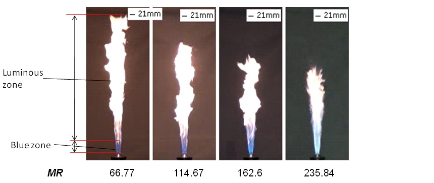
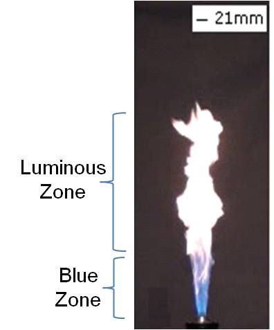
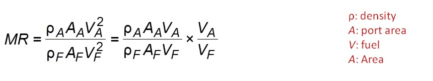
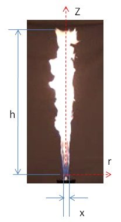
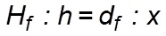
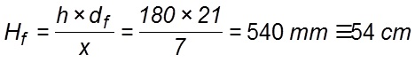
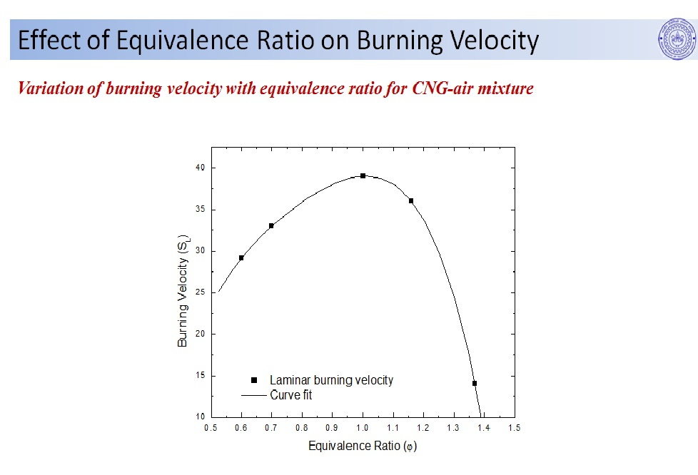
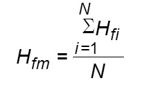
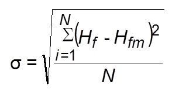
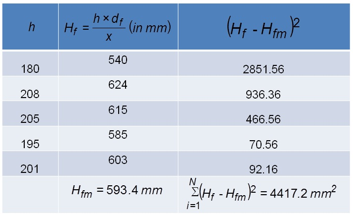

The flame videos obtained are converted to frames using video to still image convertor software.
The frames are analyzed using image processing software called ImageJ. The still images of the flame are processed by various techniques such as Enhance contrast and Edge detection for exact identification of flame tip from the nozzle rim.
The number of pixels of the flame image in the vertical direction along the centerline from the burner rim to the point where the flame is visible is counted and is scaled with the known dimension, say, burner rim diameter to obtain the exact flame height.
Variation of flame height with MFR for LPG-air IDF

Flame height decreases with an increase in the Momentum Ratio (MR).
Visible Flame Appearance with MR for LPG-air IDF

Momentum ratio (MR) is defined as the ratio of momentum between air jet and the momentum of fuel jet.

The flame can be divided in two zones namely
blue zone
luminous zone (see figure)
The blue emission is due to the radiation from excited CH* radicals in the premixed region at the flame base [1].
The luminous zone is yellow due to the radiation from soot (carbon) particles.
Calculation of Visible Flame Height
Sample calculation for obtaining the visible flame height of turbulent LPG � air IDF for MR = 68.77 from single snapshot (see figure).

The number of pixels in the vertical direction (along the centerline) from the burner rim to the point where the flame is visible (h) = 180 pixels
Number of pixels of the burner diameter in the snapshot (x) = 7 pixels
Actual dimension of the burner diameter (df) = 21 mm
Scaling of the actual flame height (Hf) becomes

Therefore, actual visible flame height can be obtained from the above expression as

Temporal Variation of Visible Flame

Variation in visible flame height with time for MR = 66.77 is shown (see above figure).
Undulations of the flame tip is observed from the time resolved images.
The flame tip fluctuations occur due to buoyancy induced vortices shedding around it.
As a result of local quenching, detached flame can be observed sometimes at the flame tip.
Error Analysis of Visible Flame Height
Mean flame height (Hfm) is obtained from the average of the actual visible flame height of N flame images taken for analysis.

The deviation from the mean flame height is obtained using the following formula

s: standard deviation of the flame height obtained from flame snapshots
Hfi: flame height of the ith image
i: index varying from 1 to N
Hfm: mean flame height
N: total number of flame images (26 in the present experiment)
Flame height is reported as
Sample Calculation for Visible Flame Height

Sample calculation for obtaining the visible flame height of turbulent LPG�air IDF for MR = 68.775 from 5 flame snapshots is shown.
A total of 26 snapshots were processed for finding the visible flame height at a particular MR in the present study.